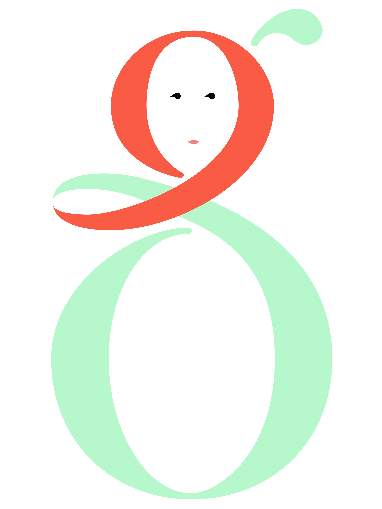
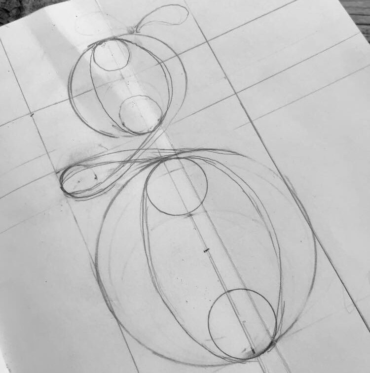
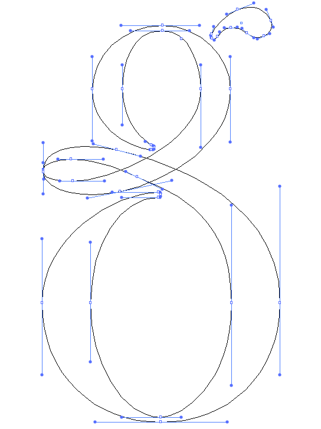
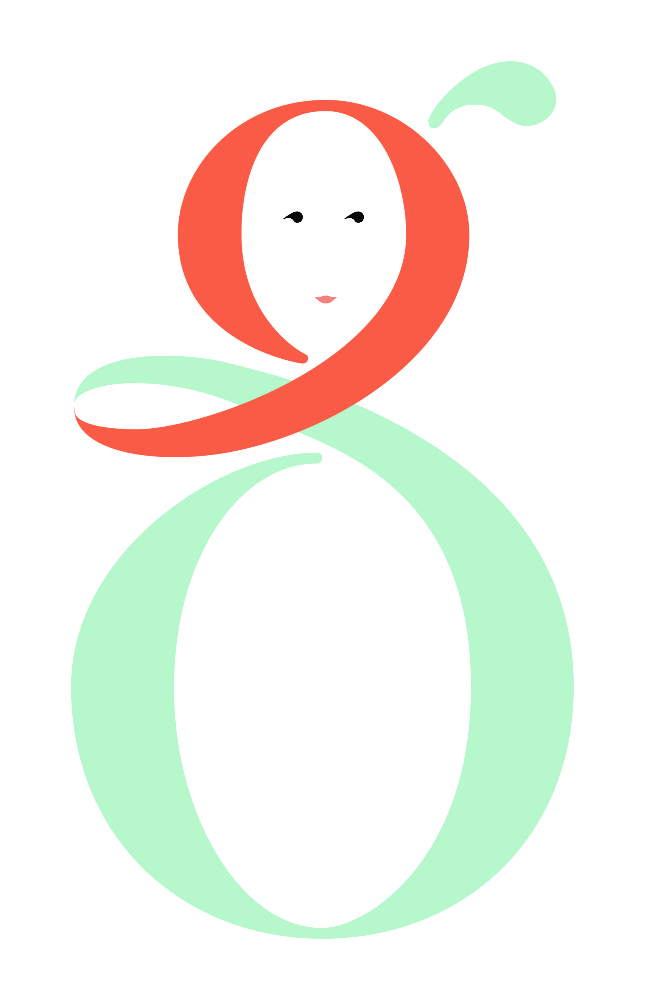
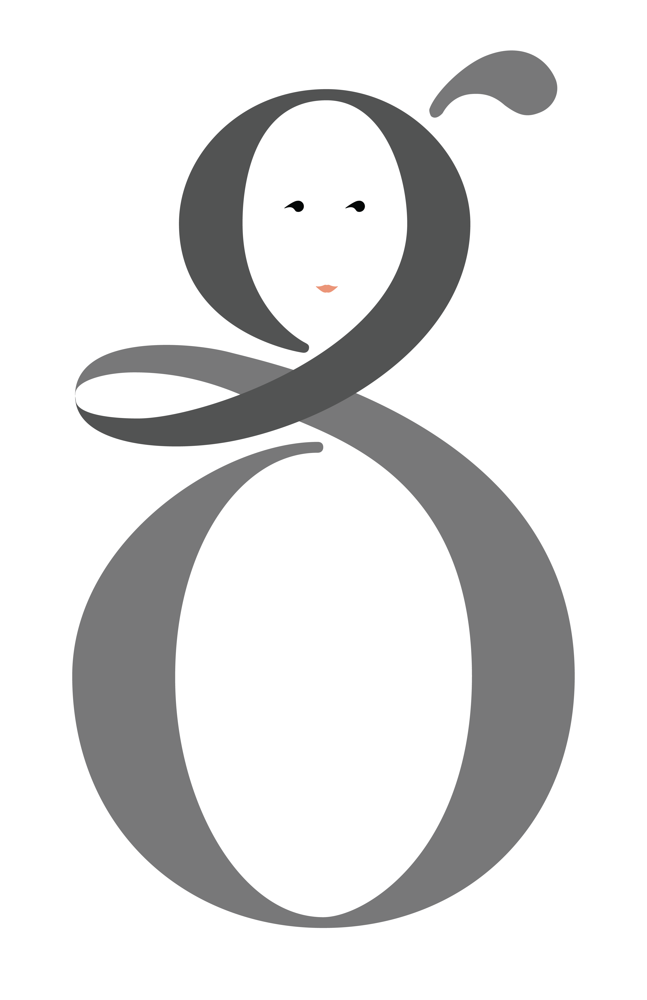
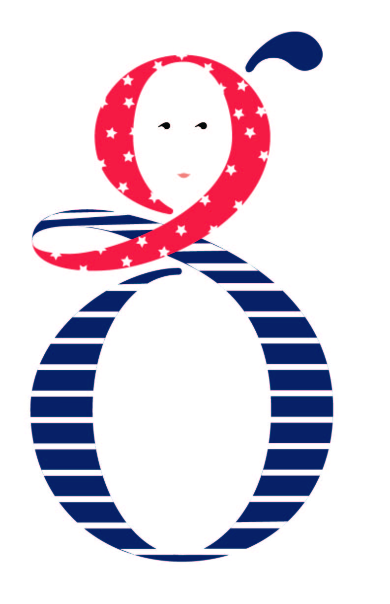
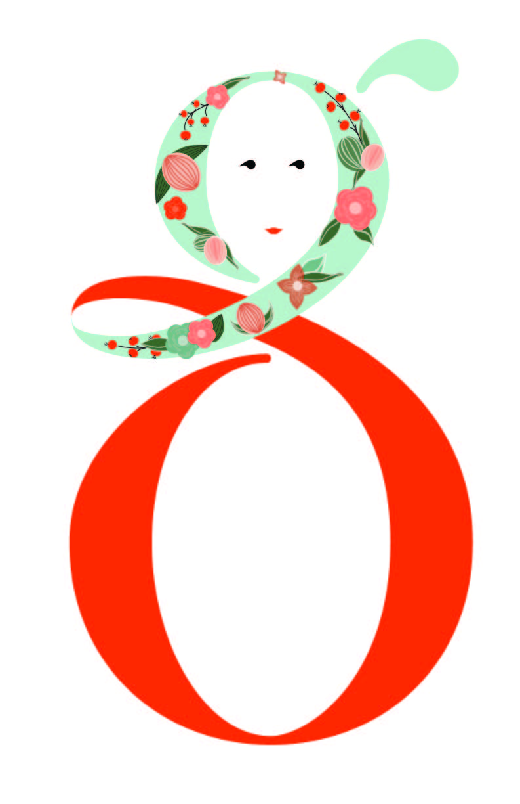

Lady G is my personal logo. I wanted to practice digital lettering and working with colors and patterns. Right now she looks like me—red hair and always wearing blue. Who knows what she'll look like next week though. This project was an exploration in creating a flexible brand identity that could adapt to different contexts while maintaining its core character.







My sketch started out with me trying to use a comma for the curve between the bottom and the top of the g. I eventually made it into a ribbon-like scarf around the top which curves into the bottom of the character. This created a distinctive silhouette that was both elegant and playful.
Once in Illustrator, I traced my sketch with one line, then added end points, which gave me a guide for the thinnest sections of the character. I was finally able to finish it off by creating proportional thick vertical strokes. This technique ensured consistent stroke weights while maintaining the organic feel of hand-lettering.
The beauty of Lady G lies in her adaptability. From professional grayscale to playful patterns, the logo maintains its core identity while expressing different personalities. Whether it's patriotic pride or floral elegance, each variation tells a unique story while remaining unmistakably "Lady G".